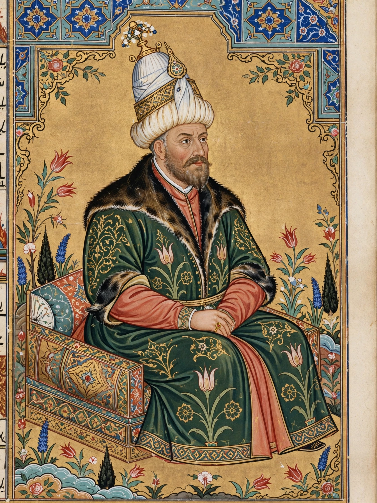

Murad III
Murad III (Ottoman Turkish: مراد ثالث, Murād-i sālis; Turkish: III. Murad; 4 July 1546 – 16 January 1595) was the sultan of the Ottoman Empire from 1574 until his death in 1595. The eldest son of Selim II and Nurbanu Sultan, Murad came to the throne after serving as governor of Manisa, and had his five younger brothers strangled upon his accession, in accordance with the practice of royal fratricide.

| Murad III | |
|---|---|
| Reign | 27 December 1574 – 16 January 1595 |
| Predecessor | Selim II |
| Successor | Mehmed III |
| Born | 4 July 1546, Manisa, Ottoman Empire |
| Died | 16 January 1595 (aged 48), Topkapı Palace, Constantinople |
| Consort | Safiye Sultan |
| House | Ottoman |
Reign
Murad's reign was marked by prolonged warfare: the long Ottoman–Safavid War of 1578–1590, which ended with the Treaty of Constantinople and Ottoman gains in the Caucasus and Azerbaijan, and the opening of the Long Turkish War with the Habsburgs in 1593. Grand vizier Sokollu Mehmed Pasha retained influence until his assassination in 1579; thereafter the court was dominated by factions associated with the valide sultan Nurbanu and later Murad's favourite consort Safiye Sultan, a period often characterised by historians as the beginning of the "Sultanate of Women".
Court and culture
Reclusive and devoted to pleasure and mysticism, Murad rarely left the palace. He was nevertheless a notable patron of the arts: his reign produced some of the finest illustrated manuscripts of Ottoman history, including the Surname-i Hümayun depicting the circumcision festival of 1582, and he commissioned the observatory of Taqi ad-Din in Istanbul (1577), briefly one of the largest observatories in the world before its demolition in 1580. Murad corresponded with Elizabeth I of England, and Anglo-Ottoman trade relations developed during his reign.
Death and succession
Murad died in 1595, reportedly of epilepsy, leaving some twenty sons. His successor, Mehmed III, had nineteen of his brothers executed, the largest royal fratricide in Ottoman history.